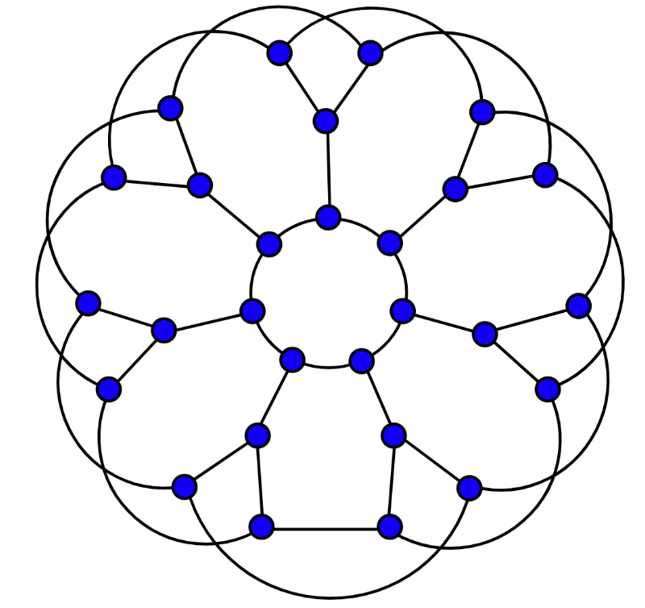

Graphs: Examples and Definitions
Week 12, Wednesday
March 25, 2026
The internet!! (circa 2003)

Graph (V,E):
V: ___________________
E: ___________________
Subgraph:
\(G'=(V',E')\) is a subgraph of \(G=(V,E)\) iff \(V'\subseteq V\) and \(E'\subseteq E\) and \((u,v)\in E'\to u\in V'\) and \(v\in V'\).
Degree(v): number of edges that touch vertex v.
Surface Mesh

Graph (V,E):
V: ___________________
E: ___________________
Aux: _________________
Planar Graph: a graph that can be drawn in the plane with no crossing edges.
Divisibility by 7
This graph is used to calculate whether a given number is divisible by 7.
- Start at the circle node at the top.
- For each digit \(d\), follow \(d\) blue (solid) edges in succession. As you move from one digit to the next, follow 1 red (dashed) edge.
- If you end up back at the circle node, your number is divisible by 7.
3703
Walk: Sequence of vertices between which there are edges
Trail: Walk with no repeated edges
Path(alt): Walk with no repeated vertices
Circuit: Trail that begins and ends in same place
Cycle: Path that begins and ends in same place

What’s left?


How do we get from here to there? Need:
1. Common Vocabulary
2. Graph implementation
3. Traversal
4. Algorithms.
Social Network
Graph (V,E):
V: ___________________
E: ___________________
Connected (sub)graph: a (sub)graph \(G=(V,E)\) is connected if there is a path from \(u\) to \(v\) \(\forall u,v\in V\).
Connected Component: a maximal connected subgraph.
Spanning Tree: connected, acyclic subgraph, containing all the vertices in \(V\).